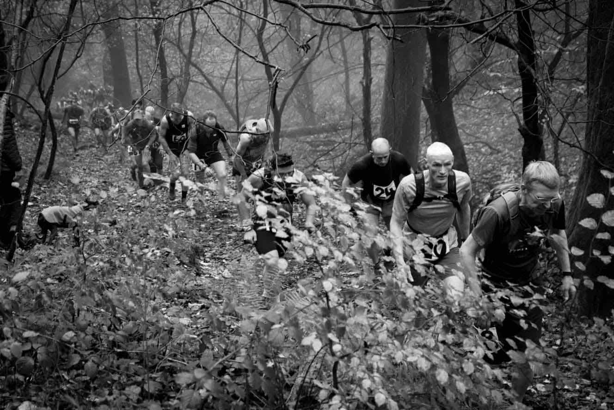
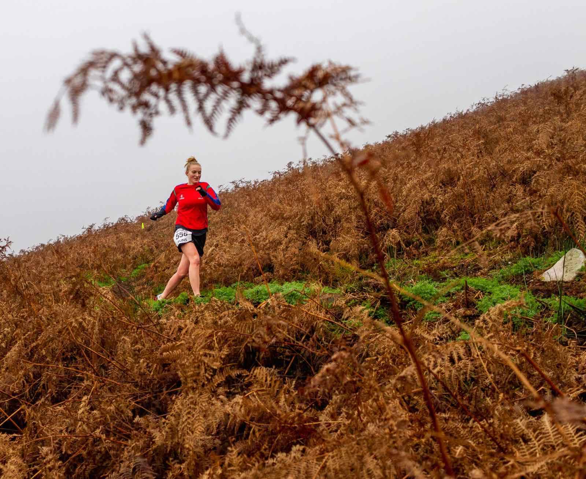
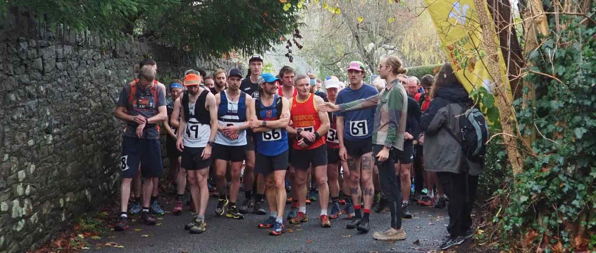
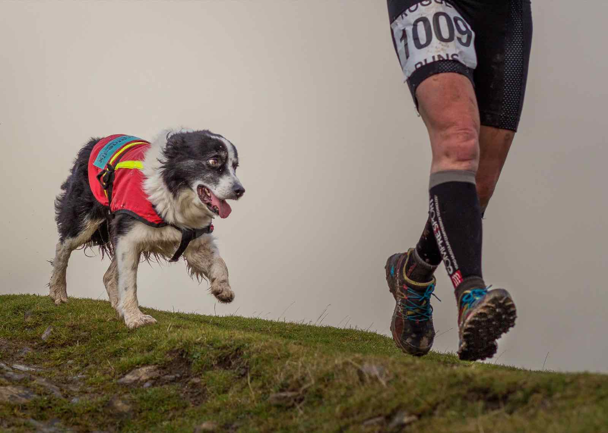
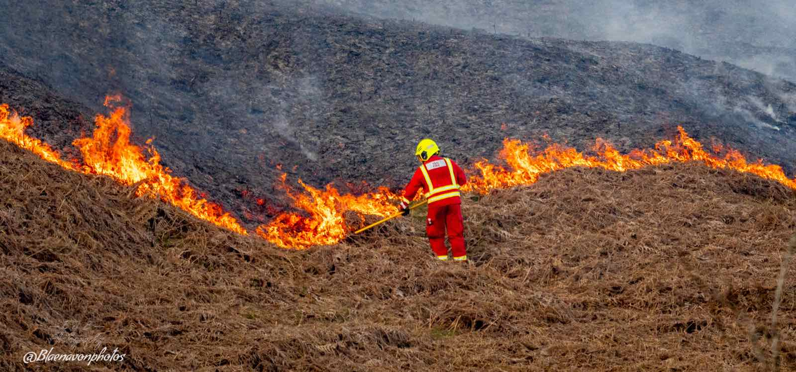
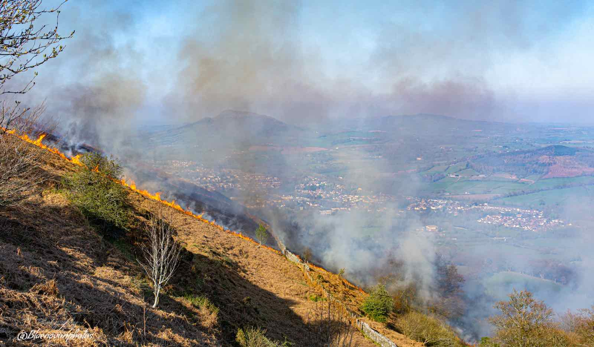

Saturday 28 November 2026 · Llanfoist
Blorenge Fell Race
Croeso i’r Blorenge, a great (but also tough) beginner-friendly fell race. This race is a real test on the thighs as you climb 485 m over the 5.7 km course.
- Start
- 1:00 pm
- Distance
- 5.7 km
- Ascent
- 485 m
- Entry
- £6
- Limit
- 110 runners
- Minimum age
- 16

Race day essentials
2026 race information
Entry opening and closing dates have not yet been confirmed. Further details will be published before entries open.
There will be no entries on the day.
- Race HQ
- Llanfoist Community Hall
- Race start
- Bottom of Church Lane, Llanfoist
- Parking
- Available but limited
- Travel
- Please walk, cycle, use public transport or lift-share where possible.
The race
Enderfyniad
Determination
Blwyddyn dwetha, dechreuodd 98 o redwyr ac gorffen nhw ras fell y Blorenge. Oedrannau o 16 i 80 oed. Roedd rhedwyr o bob gallu gwahanol yn cymryd rhan - rhai profiadol a rhai newydd. Roedd hi'n wlyb ac yn niwlog, ond gorffennodd pawb y ras yn ddiogel.

Together on the hill
Cymuned
Community
Dw i'n credu bod pawb wedi cael amser gwych - rhedeg, cerdded, sgwrsio, bwyta - jest dod at ei gilydd. Roedd y gymuned yn anhygoel, pobl leol a rhedwyr o bell yn rhannu straeon ac yn helpu ei gilydd. Roedd bwyd da, cwmni da, a chroeso cynnes i bawb.


Care for the mountain
Amgylchedd
Environment
In July 2026 a major wildfire around Blaenavon affected a large area of mixed land. The reported incident area had reached around 220 hectares by 23 July, while firefighters and partner agencies worked in difficult terrain to contain its spread. Smoke and disruption affected nearby communities.
We thank the firefighters, partner agencies, land managers and local volunteers who responded. Fire conditions and access can change, so the organiser will publish a further local-conditions update shortly before race day.
Read the Welsh Government incident update and the dated 220-hectare report.

Please follow fire-service advice, avoid any activity that could start a fire, stay away from active incidents and call 999 in an emergency. The South Wales Fire and Rescue Service Wildfire Wise guidance explains how visitors can help protect the countryside.
Stump Up For Trees works with farmers, landowners and communities across the Bannau Brycheiniog area to establish native trees and hedgerows that support biodiversity and resilient working landscapes. You can learn about its work, volunteer or support its planting programme on the charity’s website.

From the fell